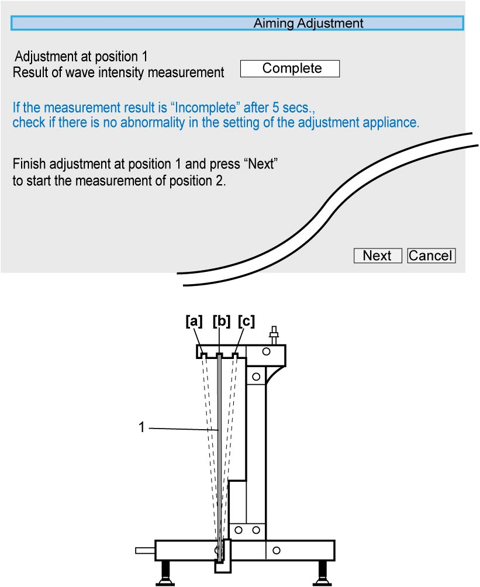
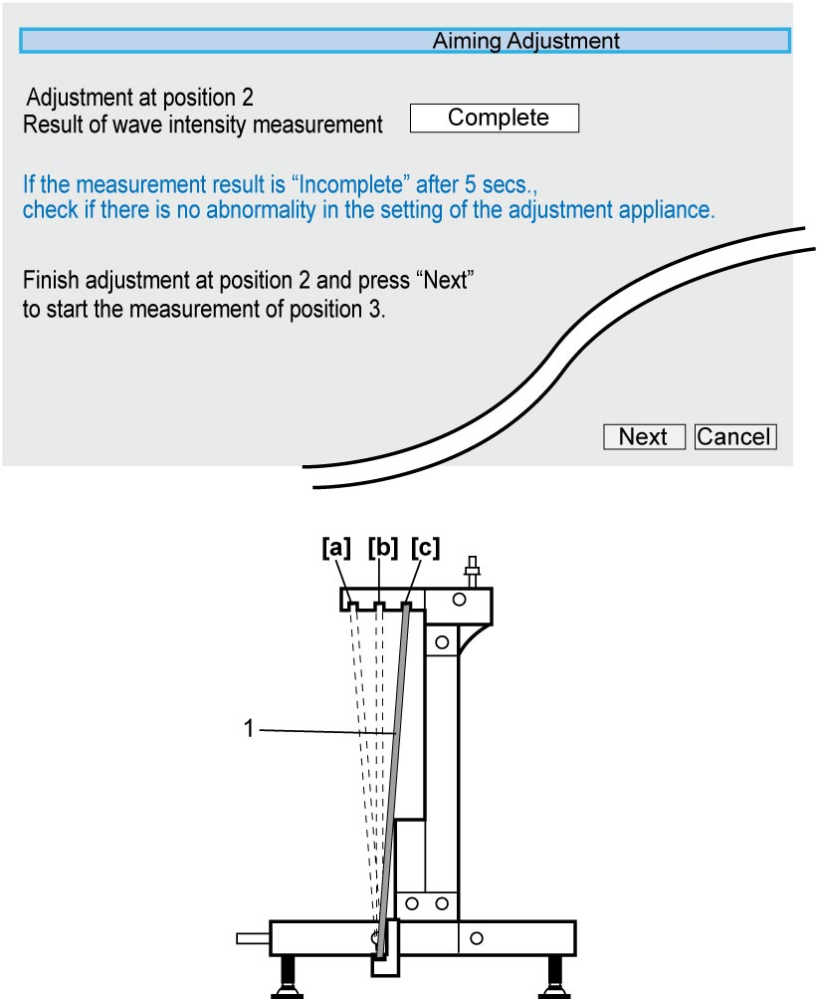

10J
| Millimeter Wave Radar Aiming Adjustment |
Perform “Millimeter Wave Radar Aiming Adjustment” as follows.
1)Remove radiator grill. 
2)Perform Vehicle Preparation.
3)Perform Inspection of Reflector Plate.
4)Perform Set up of Special Tool.
5)Perform Aiming Adjustment.
6)Perform Inspection of RBS Control Module Bracket if necessary.
7)Install radiator grill.
Vehicle Preparation
1)Park vehicle on level surface where no obstacles or reflectors in front of the vehicle in the area of 2.5 m (8.2 ft.) ahead, 5.0 m (16.4 ft.) wide (2.5 m (8.2 ft.) on both sides from center of millimeter wave radar device), and 2.0 m (6.6 ft.) high.

NOTE:
Metal reflects millimeter wave. Check that there is no metallic material on the floor surface.
 "Expand image")
| “a”: | 2.5 m (8.2 ft.) | “b”: | 5.0 m (16.4 ft.) | “c”: | 2.0 m (6.6 ft.) |
2)Adjust air pressure of all tires to specified value.
3)Remove any load from vehicle.
NOTE:
It is not necessary to empty the fuel tank.
4)Clean millimeter wave radar surface (1) and check that there is no adhesion of water droplets etc. or abrasion.
 "Expand image")
Inspection of Reflector Plate
Check the following items.
•No adhesion of dirt on reflector plate surface
•No abrasion on reflector plate surface
•No distortion of reflector plate
•No abrasion on reflector plate surface
•No distortion of reflector plate
Set up of Special Tool
NOTICE:
Failure to take the following precautions could cause inaccurate reflection of millimeter wave.
•During storage or set up of reflector plate, do not damage its reflecting surface protecting it by packing material or cloth.
•Do not distort reflector plate exposing it to large shock or stress.
•Do not distort reflector plate exposing it to large shock or stress.
NOTE:
Reflecting surface of new reflector plate is covered by protective film and millimeter wave could not be reflected without removing the film. Remove the protective film from the reflector plate before setting up.
1)Fit adjuster set (2) to front reflector frame (1), and then adjust height “a” shown below to 100 mm (3.94 in.).
 "Expand image")
2)Put rear reflector frame (1) in contact with rear wheels (2) and set the frame to symmetric arrangement so that dimension “a” from the frame right end to right tire center and dimension “b” from the frame left end to left tire center become equal as shown.
3)Connect front reflector frame (3) and rear reflector frame using reflector wire ropes (4).
NOTE:
•Set up of special tools cannot be done correctly if reflector wire ropes are crimped.
Undo entangled ropes carefully, if any. Do not pull ropes entangled.
•Each wire rope has two hooks at one side. One hook is connected to long wire rope and the other one is connected with extension wire. Use the hook (6) shown below for this model.
Undo entangled ropes carefully, if any. Do not pull ropes entangled.
•Each wire rope has two hooks at one side. One hook is connected to long wire rope and the other one is connected with extension wire. Use the hook (6) shown below for this model.
 "Expand image")
4)Stretch right and left reflector wire ropes equally so that center line of RBS control module (5) aligns with center of front reflector frame.
 "Expand image")
5)Clean reflector plate (1) and check that there is no adhesion of dirt or abrasion.
6)Set reflector plate to position 2 as shown.
7)Check that set up distance “a” from front end (millimeter wave radar surface) of RBS control module (2) to reflector plate is as specified. If the distance is not within the specification, repeat Step 2) – 4) again.
Reflector plate set up distance
“a”: 1.0 – 1.1 m (3.3 – 3.6 ft.)
 "Expand image")
| [a]: | Position 1 | [b]: | Position 2 | [c]: | Position 3 |
8)Adjust front reflector frame (5) to be vertical checking inclination of the frame putting level (2) to center of reflector plate (1) at the top and bottom in turn, and turning adjuster pads (4).
NOTE:
While putting level to the top and bottom of reflector plate, check an air bubble (3) in the level becomes just center as a result of the adjustment.
 "Expand image")
9)Set reflector plate to position 1.
Aiming Adjustment
NOTE:
•If C1600 is detected as current or history DTC, aiming adjustment cannot be done. In this case, it is necessary to perform the following items first.
—Current DTC: Repair according to troubleshooting
—History DTC: Clear DTC
•When “Result of wave intensity measurement” at position 1 – 3 is “Incomplete”, DTC C1610 will be detected.—History DTC: Clear DTC
1)Connect SUZUKI scan tool to DLC (1) with ignition “OFF”.

 "Expand image")
2)Set ignition “ON”.
3)Select “Aiming” under “Utility” mode in “Radar Brake Support”.
4)Set reflector plate (1) to position 1 and check that the plate is completely stationary. And then, select “Next” in SUZUKI scan tool.
NOTE:
Upon selection of “Next”, measurement of regulated radio wave intensity at position 1 is started.
 "Expand image")
| [a]: | Position 1 | [c]: | Position 3 |
| [b]: | Position 2 |
5)When “Result of wave intensity measurement” at position 1 becomes “Complete”, set reflector plate (1) to position 2 and check that the plate is completely stationary. And then, select “Next” in SUZUKI scan tool.
NOTE:
If “Incomplete” stays displayed for 5 seconds after starting measurement of regulated radio wave intensity, inadequate set up of reflector plate is assumed. Check the state of Set up of Special Tool. If set up of the special tools is correct, malfunction of RBS control module is suspected.

 "Expand image")
| [a]: | Position 1 | [c]: | Position 3 |
| [b]: | Position 2 |
6)When “Result of wave intensity measurement” at position 2 becomes “Complete”, set reflector plate (1) to position 3 and check that the plate is completely stationary. And then, select “Next” in SUZUKI scan tool.

 "Expand image")
| [a]: | Position 1 | [c]: | Position 3 |
| [b]: | Position 2 |
7)When “Result of wave intensity measurement” at position 3 is finished with “Complete” displayed, adjust direction of millimeter wave radar surface turning aiming bolts (1). Follow turning value of adjustment for up and down and right and left shown on the display.

NOTE:
•For adjustment of aiming bolts, use commercially available 3.5 mm socket driver (2).
•If there is no allowance for the bolt adjustment or turning values for adjustment for “up/down” and/or “right/left” is shown as “± 8.00”, suspend aiming adjustment by selecting “Cancel” and perform the following steps.
•If there is no allowance for the bolt adjustment or turning values for adjustment for “up/down” and/or “right/left” is shown as “± 8.00”, suspend aiming adjustment by selecting “Cancel” and perform the following steps.
a.Check reflector plate.
b.Recheck the state of special tool set up.
c.Check RBS control module for loose or faulty fitting.
d.Check RBS control module bracket.
e.Check vehicle body for distortion.
f.Check hood lock member for distortion.
g.Check RBS control module itself.
b.Recheck the state of special tool set up.
c.Check RBS control module for loose or faulty fitting.
d.Check RBS control module bracket.
e.Check vehicle body for distortion.
f.Check hood lock member for distortion.
g.Check RBS control module itself.
 "Expand image")
 "Expand image")
| [A]: | Up and down | [B]: | Right and left |
8)Set reflector plate (1) to position 1 and select “Retry”.
 "Expand image")
| [a]: | Position 1 | [c]: | Position 3 |
| [b]: | Position 2 |
9)Perform Step 5) – 7).
10)Repeat Step 8) – 9) until turning values of aiming bolts for both up and down and right and left become “+ 0.00”.
11)Upon completion of Step 10), select “Next” and finish aiming adjustment by selecting “Exit” on display.
 "Expand image")
Inspection of RBS Control Module Bracket
RBS control module No.1 bracket
1)Remove RBS control module No.1 bracket from body and remove clips.
2)Fix RBS control module No.1 bracket on surface plate facing mounting surface for RBS control module upward.
 "Expand image")
3)Measure height of RBS control module No.1 bracket mounting surface (3) where clip is fitted as shown.
If measured height is out of standard range, replace RBS control module No.1 bracket.
If measured height is out of standard range, replace RBS control module No.1 bracket.
Height of No.1 bracket surface where clip is fitted from surface plate
“a”: 6.20 – 7.60 mm (0.24 – 0.30 in.)
 "Expand image")
| 1. | Vernier caliper | 2. | Surface plate |
RBS control module No.2 bracket
1)Remove RBS control module No.2 bracket from body.
2)Check RBS control module No.2 bracket (1) for wear, distortion or damage. If any defect is found, replace RBS control module No.2 bracket.
 "Expand image")